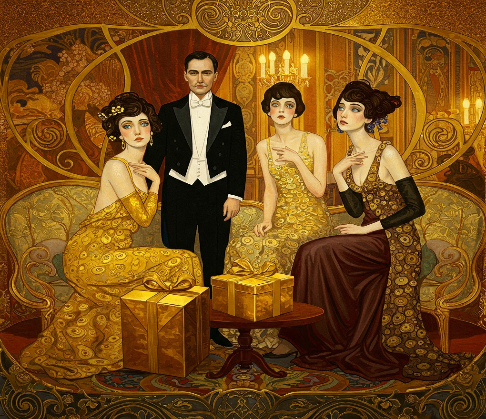

The Butterfly Effect
The First Golden Age
America's first Golden Age, now known as the Gilded Age, spanned roughly from 1870 to 1900. This Guilded Age represents one of the most transformative yet contradictory periods in the nation's history. Following the turmoil of the Civil War, the United States experienced unprecedented industrial growth, technological innovation, and economic expansion that fundamentally reshaped American society.  Railroad networks expanded from approximately 35,000 miles in 1865 to over 193,000 miles by 1900, while steel production soared from 77,000 tons to over 11 million tons during the same period (Cashman, 1984). On the surface, this era appeared to herald America's arrival as a modern industrial powerhouse.
The term "Gilded Age" itself reveals the period's fundamental contradiction. Coined by Mark Twain and Charles Dudley Warner in their 1873 satirical novel "The Gilded Age: A Tale of Today," the metaphor refers to the practice of applying a thin layer of gold over a base metal—creating the illusion of solid gold while concealing a less valuable reality beneath. This perfectly captured the essence of an era where dazzling wealth and progress masked profound social problems, corruption, and inequality. As historian Sean Dennis Cashman noted, it was "an age of incredible opulence displayed against a backdrop of extreme poverty" (Cashman, 1984).
Behind the spectacle of economic growth and the amassing of unprecedented fortunes by industrialists like John D. Rockefeller, Andrew Carnegie, and J.P. Morgan lay a darker reality. By 1890, the richest 1% of Americans owned approximately 51% of all wealth, while the bottom 44% possessed just 1.2% (Williamson & Lindert, 1980). This staggering concentration of wealth occurred alongside dangerous working conditions, child labor, urban slums, and widespread poverty affecting millions of Americans. The average industrial worker earned less than $500 annually (approximately $15,000 in today's terms) while working 60-hour weeks in often hazardous environments (Zinn, 2005).
The disparities of this period were not accidental but rather systematically created and maintained through political corruption, monopolistic business practices, and the exploitation of a growing immigrant workforce. Railroad companies alone received over 170 million acres of public lands in government subsidies while using financial manipulation, predatory pricing, and political bribery to eliminate competition (White, 2011). The relationship between government and business became so intertwined that Senator Mark Hanna famously remarked, "There are two things that are important in politics. The first is money, and I can't remember what the second one is."
What makes the Gilded Age particularly relevant today is its demonstration of how narratives of progress and prosperity can obscure growing systemic problems that ultimately threaten social stability. The extreme economic inequality eventually generated powerful countermovements, including the rise of labor unions, the Populist Movement, and ultimately the Progressive Era reforms. From the Great Railroad Strike of 1877 to the Pullman Strike of 1894, increasingly organized resistance challenged the status quo, often met with violent suppression from both private security forces and government troops (Brands, 2010).
As we examine our own era of technological disruption, globalization, and growing wealth concentration, the Gilded Age offers valuable historical perspective. The lessons of this period remind us that economic growth alone does not ensure broadly shared prosperity, and that extreme inequality often leads to social instability and demands for reform. By understanding how the gilded facade of progress concealed underlying exploitation during this pivotal period, we gain important insights for evaluating contemporary claims about economic prosperity and its distribution throughout society.